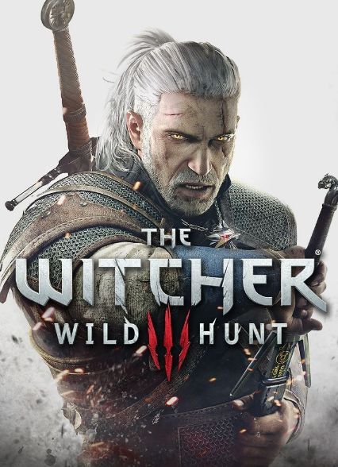
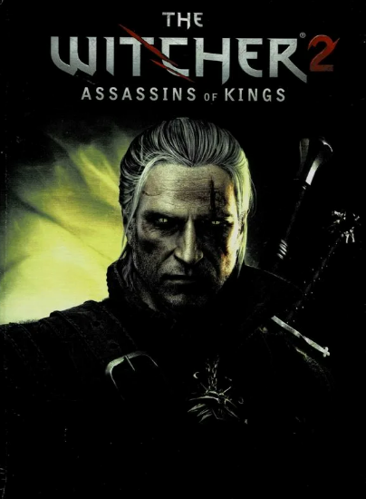
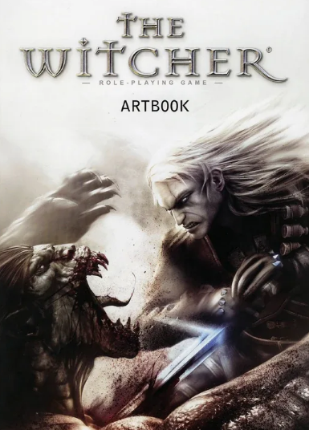
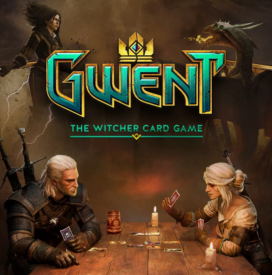

Официальные лицензионные игры от CD Projekt RED. Нажмите на кнопку, чтобы перейти в магазин Steam и приобрести игру.
Сравнение игр
Игра
Год
Движок
Размер
Рейтинг Steam
Ведьмак 3: Дикая Охота
2015
REDengine 3
50 GB
96%
Ведьмак 2: Убийцы королей
2011
REDengine
16 GB
89%
Ведьмак (первая глава)
2007
Aurora Engine
9 GB
85%
Гвит: Ведьмак. Карточная игра
2018
Unity
8 GB
87%
Награды игр
Ведьмак 3: Дикая Охота — более 800 наград «Игра года», включая Golden Joystick Awards и The Game Awards 2015.
Ведьмак 2: Убийцы королей — 50+ наград, включая «Лучшая RPG» от IGN.
Ведьмак — премия за лучший сюжет и роль.
Гвит — премия за лучшую карточную игру 2018 года.
Игры

Ведьмак 3: Дикая Охота
1499 ₽ (Complete Edition)
Шедевр CD Projekt RED. Грандиозный открытый мир, два дополнения: «Каменные сердца» и «Кровь и вино». Более 200 часов геймплея. Ваши решения влияют на финал игры.

Ведьмак 2: Убийцы королей
799 ₽
Нелинейный сюжет с политическими интригами. Enhanced Edition включает все дополнения. Вторая глава полностью меняется в зависимости от вашего выбора.

Ведьмак (первая глава)
449 ₽
Классика 2007 года. Начало легендарной трилогии. Enhanced Edition Director's Cut с улучшенной графикой и дополнительными сценами.

Гвит: Ведьмак. Карточная игра
Бесплатно
Автономная версия культового гвинта. Собирайте уникальные колоды, сражайтесь с игроками по всему миру. Регулярные обновления и рейтинговые режимы.